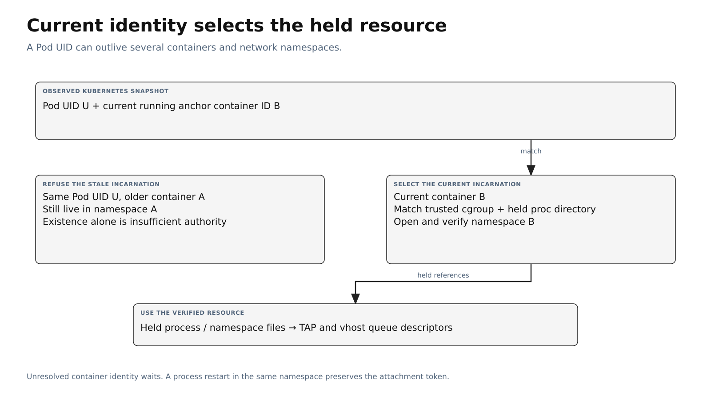

One Cilium fabric: network review
One fabric, separate guest identities
Network review / OpenStack and qrab
Evidence: U02, S08, S091 / 13 · networking

Two network planes become one Cilium fabric

A guest packet through its NIC identity
One Cilium fabric: network review
One fabric does not mean one identity
Management Pod
BMC / Redfish and private management listeners have the VM Pod endpoint.
Guest NIC
Each anchor has its own address, Cilium endpoint and security-group labels.
Optional VPN NIC
An anchor can route through its own tunnel and preserve its own policy scope.
Evidence: S08, S09, S254 / 13 · networking
One Cilium fabric: network review
Network control still has explicit owners
- Operator: stable address claims, anchor lifecycle, policy labels and scoped route intent.
- netd: local TAP/vhost grants, routing, DHCP compatibility and handoff control.
- Cilium + FRR: endpoint policy/datapath and BGP reachability, respectively.
Evidence: S08, S09, U075 / 13 · networking

Local attachment authority starts with a real Pod hierarchy

Current container identity selects the held resource
One Cilium fabric: network review
Recover the namespace, not just the API name
- A Pod UID can survive a CRI sandbox replacement.
- A new held namespace changes the opaque attachment token and restarts bound DHCP.
- Manager releases old queues before fresh attachment, preserving MAC and root port.
Evidence: A07, S09, S108 / 13 · networking

Migration: simple ownership and stream overview
One Cilium fabric: network review
Three different migration concerns
Endpoint authority
Prepared target stays fenced until the controlled ownership switch.
Connection state
Node-bound authenticated peers copy only the scoped conntrack entries.
Reachability
FRR convergence and temporary forwarding have their own observations.
Evidence: S08, S09, S11, S1210 / 13 · networking
One Cilium fabric: network review
Distinguish a control outage from a payload fault
| Symptom | First boundary to inspect |
|---|---|
| New queues unavailable | netd socket, current anchor token, authorization and holder checks |
| Guest packets fail | Anchor routes, Cilium policy/endpoint, traffic origin and FRR paths |
| Management fails alone | VM Pod endpoint and user/service admission |
Evidence: S09, S10, S18, S1911 / 13 · networking

Four different kinds of evidence
One Cilium fabric: network review
Prove the selected workload network contract
- Test allowed and denied guest paths separately from management access.
- Observe address ownership, DNS, route convergence and recovery on the chosen release.
- Exercise guest hot-unplug, migration and node-loss behavior with application evidence.
Evidence: S08, S09, S10, S1113 / 13 · networking